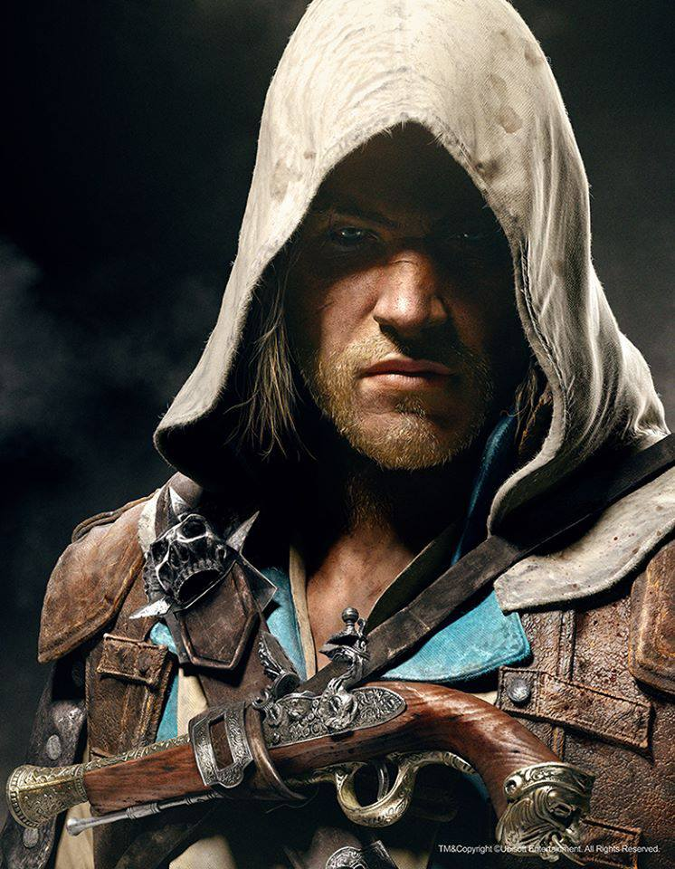
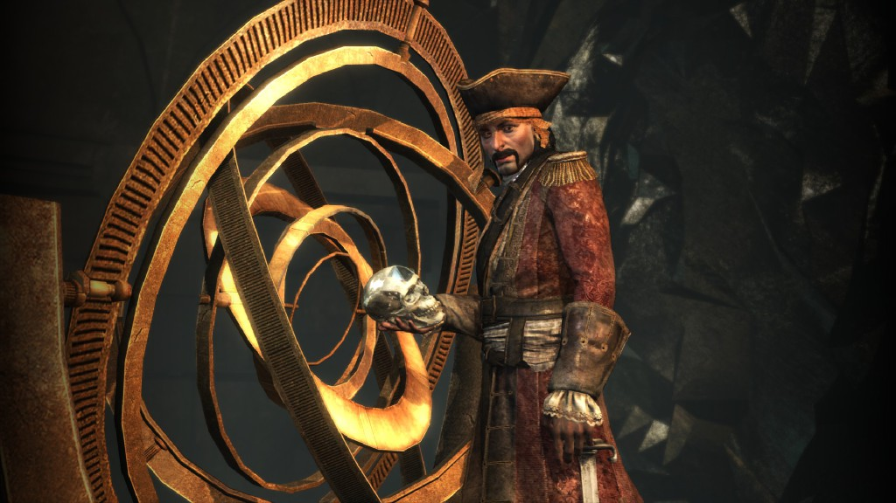

The game features three main cities; Havana, Kingston, and Nassau, which reside under Spanish, British, and pirate influence, respectively. The game also features 50 other individual locations, including atolls, sea forts, Mayan ruins, sugar plantations and underwater shipwrecks to explore, with a 60/40 balance between land and naval exploration. Assassin's Creed IV has a more open world feel, with missions similar to those found in Assassin's Creed, as well as fewer restrictions for the player. The world opens up sooner in the game, as opposed to Assassin's Creed III, which had very scripted missions and did not give players freedom to explore until the game was well into its first act. The player will encounter jungles, forts, ruins, and small villages and the world is built to allow players much more freedom, such as allowing players to engage, board, and capture passing ships and swimming to nearby beaches in a seamless fashion. In addition, the hunting system has been retained from Assassin's Creed III, allowing the player to hunt on land, and fish in the water, with resources gathered used to upgrade equipment.
A new aspect in the game is the Jackdaw, the ship that the player captains. The Jackdaw is upgradeable throughout the game, and is easily accessible to the player when needed. In addition, a new underwater component has been added. The player has access to a spyglass, allowing the examination of distant ships, along with their cargo and strength. It can also help determine if an island still has animals to hunt, treasures to find, high points to reach for synchronization or additional side-quests to complete, such as assassinations and naval contracts. An updated form of the recruit system introduced in Assassin's Creed: Brotherhood has returned, allowing Edward to recruit crew members. While Kenway's crew will remain loyal to him, can be promoted to captain acquired ships and are needed to assist in boarding enemy vessels, they cannot assist in combat or perform long-range assassinations, as in previous games. Ubisoft removed this aspect of the brotherhood system, believing it allowed players to bypass tense and challenging scenarios too easily. |
|  | Edward Kenway was a Welsh-born British privateer-turned-pirate and a member of the Assassin Order. Edward joined the British Royal Navy early in his life and, once accepted, found himself stationed in the West Indies. However, a quick end to the war and the promise of gold, glory and fame eventually seduced him into a life of piracy; it was during this quest that Edward first encountered the Assassin and Templar Orders, and became embroiled in their struggle. Over the next few years, Edward struggled with the internal conflict that arose from his desire for fame and richesthrough the finding of the Observatory and what he saw as his recompense for bringing death and destruction upon the Assassins. Eventually, Edward chose to entrust the Observatory to the Assassins, and elected to join their Creed. |
|  | Bartholomew Roberts is one of the primary antagonists. He was established as a Sage, the only man in the Golden Age of Piracy with knowledge of the location of the Observatory. Roberts is highly sought out by both the Templars and the Assassins; the Templars wishing to use the Observatory for their own goals, and the Assassins attempting to prevent them from doing so |